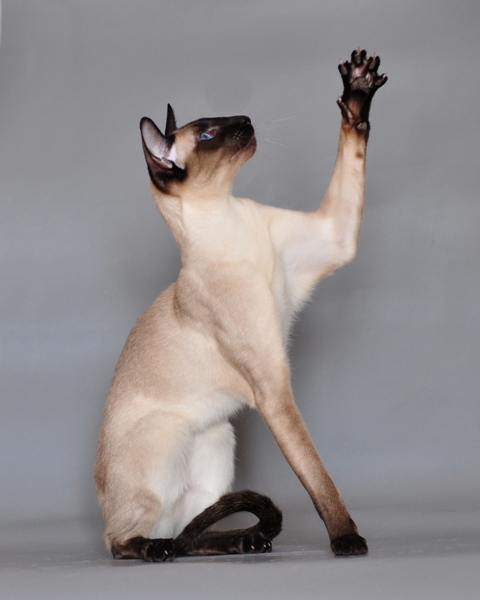

Siamese Cats
The Siamese cat is one of the first distinctly recognised breeds of domestic cat. It is selectively bred since the end of the 19th-century from the Wichianmat landrace, one of several varieties of cats native to Thailand and is pedigreed in all major cat fancier and breeder organisations

Chihuahuas
The Bombay cat is a short-haired breed of domestic cat. Bombays are glossy solid black cats with a muscular build, and have characteristic large bright copper-golden eye